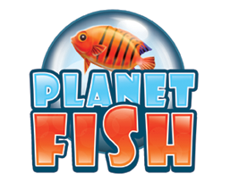
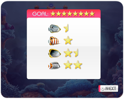

5 |
Cómo se juega |
 |
|
Atrapa diferentes tipos de peces de todo el mundo. Explora seis regiones en el Océano Atlántico, Índico y Pacífico. Cada región te ofrece cinco caladeros exclusivos, cada uno rebosante de peces. Pon los peces que atrapes en tu acuario y disfruta de una relajante vista siempre que quieras.
ObjetivoEl objetivo del juego es atrapar tantos peces como puedas para colocarlos en tu acuario. Todos los peces se ocultan en el Océano Atlántico, Índico y Pacífico, lugares que deberás explorar para poder atrapar todos los peces. Cómo se juegaPara jugar, selecciona cualquier nivel que hayas desbloqueado en el mapa del mundo.
Controles
ContadorPara activar las hélices, necesitarás aire, al igual que para disparar tus burbujas. Por lo tanto, solo podrás permanecer a flote en un nivel mientras te quede aire en la bombona.
Completar un nivelCada pez aparece representado por estrellas, que muestran su rareza y la dificultad para atraparlo. Al principio de cada nivel se te mostrará un objetivo. Para completar un nivel y desbloquear el siguiente, tendrás que atrapar suficientes peces como para rellenar las estrellas del objetivo. Perfecto¡Si logras el objetivo antes de que se agote el tiempo, podrás conseguir un Perfecto! Intenta atrapar todos los peces restantes del nivel antes de que se acabe el tiempo. |
 |
 |
 |